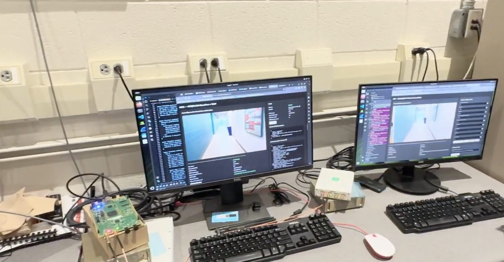

01
UE swarm
emulation
Execute independent, standards-aware UEs as coordinated GPU workloads while preserving timing, mobility, traffic, channel, and protocol state.
Explore NextUE ↗UniPhy Technologies builds GPU-native instrumentation for AI-RAN and 6G: realistic, observable, multi-device experimentation from waveform to workload.
AI-native networks need more than offline simulations. They need a programmable population of realistic devices, a live network, and synchronized ground truth that makes every result explainable and repeatable.
See the platform ↗NextUE connects standards-aware virtual UEs, GPU-native PHY processing, programmable channel conditions, and synchronized observability into one scientific instrument.
Execute independent, standards-aware UEs as coordinated GPU workloads while preserving timing, mobility, traffic, channel, and protocol state.
Explore NextUE ↗Insert neural wireless functions into a live 5G stack and compare learned and conventional processing under realistic multi-device conditions.
Explore the research ↗Capture waveform, channel, protocol, workload, and execution traces for training, evaluation, deterministic replay, and calibration.
See the workflow ↗UniPhy’s MEC task-offloading demonstration sends an image task through an OpenAirInterface 5G path to GPU-accelerated inference at the edge, then returns compact detection results with timing metadata.
Discuss the demonstration ↗
OAI / NVIDIA EDGE TESTBEDThe current testbed connects a UE application, OAI radio and 5G core components, a local N6 network, and a GPU-enabled MEC service on an NVIDIA DGX Spark edge node.
Measure an application task across the wireless network rather than simulating the connection offline.
Run a larger AI model close to the device and return lightweight detection metadata.
Use latency, bandwidth, queue delay, and GPU load to guide future offloading decisions.
Each stage reuses the verified network and application path from the previous stage.
Send a JPEG task through the OAI PDU session, run YOLO inference on the edge GPU, and return labels, confidence, boxes, and timing.
A lightweight local anomaly model screens samples first, while suspicious images are sent to the MEC service for detailed classification or segmentation.
Adjust local versus edge processing, frame rate, resolution, model, threshold, and in-flight tasks as network and compute conditions change.
Define UE populations, mobility, channels, traffic, and AI workloads.
Run coordinated GPU workloads against real gNB and SDR infrastructure.
Use synchronized traces to explain outcomes and validate the next idea.
UniPhy helps teams move from algorithm development to evidence-backed deployment in the environments where wireless reliability matters most.
UniPhy Technologies brings together research leadership and systems engineering to turn next-generation wireless ideas into working instruments.
Tell us about the wireless system, AI-RAN experiment, or edge application you’re building.